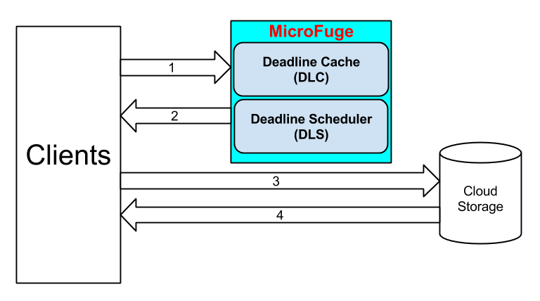
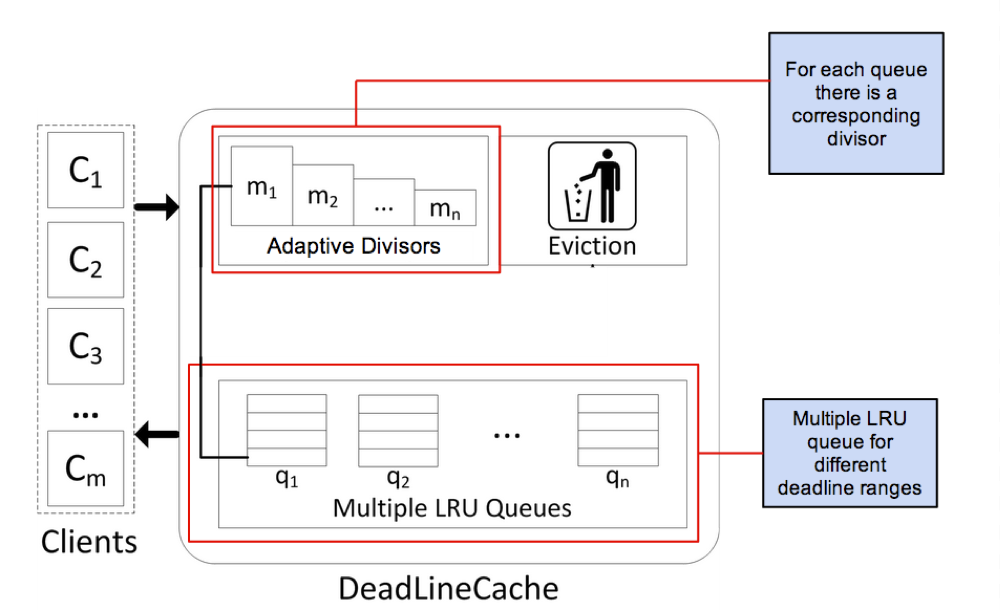
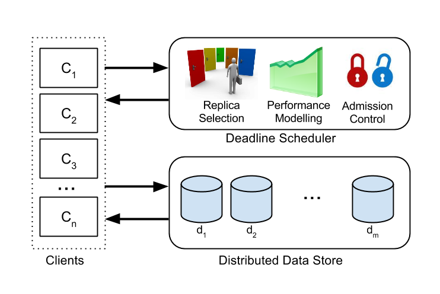

A Middleware that provides Performance Isolation in Cloud Storage Systems
About
Cloud computing has significantly improved resource utilization by having multiple tenants share the same resources. However, this reduces the isolation between tenants which may lead to inconsistent and unpredictable performance. Providing predictable performance is particular important for cloud storage systems because they are often the performance bottlenecks for many cloud-based services. MicroFuge is a distributed caching and scheduling middleware that provides perform isolation for cloud storage systems by meeting client requirement in spite of competing resources from other tenants. Clients provide request deadlines to our system and MicroFuge provides performance isolation by meeting their deadlines. MicroFuge addresses the problem by building an empirically-driven performance model of the underlying storage system based on measured data. Using this model, MicroFuge reduces deadline misses through adaptive deadline-aware cache eviction, scheduling and load-balancing policies. MicroFuge can also perform early rejection of requests that are unlikely to make their deadlines.
System Overview
|
MicroFuge provides performance isolation through two middleware components.
Deadline Cache (DLC)
Deadline Schedule (DLS)
|
 |
|  |
DLC offers adaptive deadline-aware caching
|
With MicroFuge’s distributed design, each DLS
is responsible for scheduling client access to a
subset of distributed data servers. Each scheduler
performs three tasks to provide performance
isolation in the scheduling layer.
|
 |
Publications
-
MicroFuge: A Middleware Approach to Providing Performance Isolation in Cloud Storage Systems.
Akshay K. Singh, Xu Cui, Benjamin Cassell, Bernard Wong, and Khuzaima Daudjee.
In Proceedings of the International Conference on Distributed Computing Systems (ICDCS),
Madrid, Spain, July 2014. (Acceptance Rate: 13%).
[ PDF ]
People
- Akshay K. Singh
- Xu Cui
- Benjamin Cassell
- He Huang
- Professor Bernard Wong
- Professor Khuzaima Daudjee